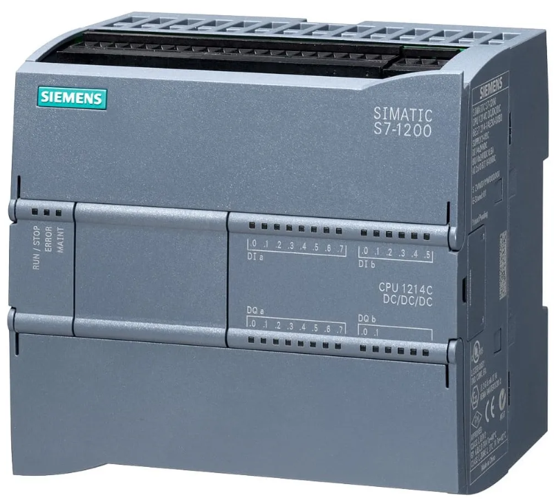

CLP

O que é o CLP? (Modelo da CPU 1214c do tipo DC/DC/DC)
É um computador industrial usado para automatizar máquinas e processos. As entradas recebem sinais de sensores e as saídas controlam dispositivos.
DC: alimentação em corrente contínua
DC: entradas digitais em 24v
DC: saídas digitais em 24v
O que é entrada analógica e o que é entrada digital no CLP?
Entrada analógica: recebe sinais variados com precisão. Pode ser usado para receber valores de temperatura, pressão, nível de líquido, etc.
Entrada digital: reconhece dois estados 0 (desligado) e 1 (ligado)
O que é saída analógica no CLP?
Permite que o CLP controle algo enviando sinais variáveis. Alguns exemplos são: regular intensidade de luz, ajustar abertura de uma válvula e até controlar a velocidade de um motor.